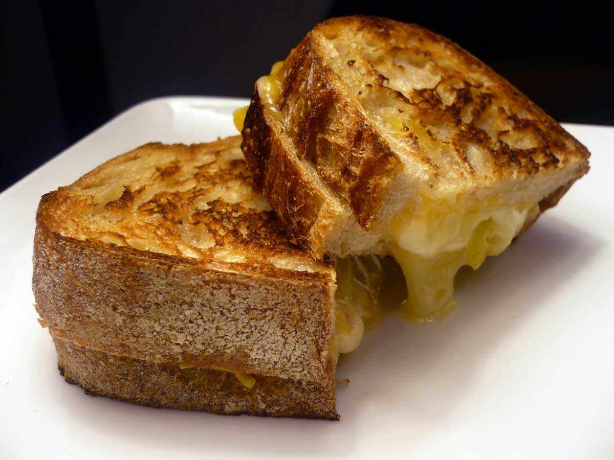

Grilled Cheese

Description
This dish is a classic. It's my go to when I want something quick, that will fullfill any craving. Most of use are familiar with this, melty, gooey cheese inside crispy, toasted bread. Pairs well with tomato soup.
Ingredients
- 2 slices of bread, sourdough is a good choice, but almost anything will work.
- Mayonnaise
- 2-4 ounces of cheese, shredded or thinly sliced. Can be one kind, can be 4. American is a classic, cheddar works well too. Havarti was my favorite when I was younger. I've heard good thinks about swiss, meunster and gruyere. Feel free to experiment.
- Garlic powder, optionally
- Black Pepper, optionally
- Butter
- Salt
Instructions
- Lightly toast the one side of the bread in the pan.
- Spread mayonnaise on the toasted side, as the optional garlic powder and black pepper onto the mayo.
- Place your cheese on one slice of bread, on top of the mayo. Close your sandwich keeping the mayo on the inside.
- Melt some butter in the pan, enough to coat the bottom of the pan (and maybe a bit more).
- Keeping the heat low enough to stop the bread from burning before the cheese melt, but high enough to finish the sandwich in a reasonable timeframe, place the sandwich in the pan.
- Once the bottom of the bread is toasted, flip the sandwich.
- Once the bottom of the second side is toasted, if the cheese is visibly melted take the sandwich out. If the cheese is not melted keep flipping every 30-60 seconds until the cheese is melted or the bread is slightly burnt.
- Sprinkle with salt, serve however you like, and enjoy.
Return to main page